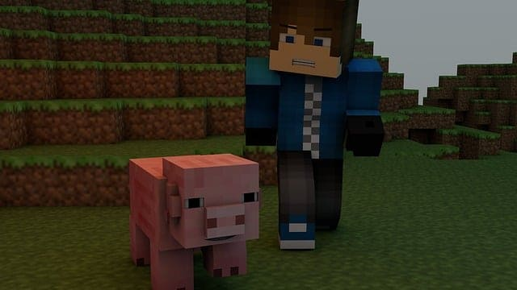

Le Minecraft Block Generator est un outil en ligne qui permet aux joueurs de créer facilement des packs de texture personnalisés pour Minecraft en générant des blocs de texture personnalisables.
Le Minecraft Block Generator offre des fonctionnalités telles que la personnalisation des couleurs, des motifs, des détails et des effets visuels des blocs de texture, ainsi que la prévisualisation en temps réel des modifications apportées.
Le Minecraft Block Generator est un outil en ligne accessible via un navigateur web. Il suffit de se rendre sur le site web officiel du Minecraft Block Generator pour commencer à l'utiliser.
Oui, le Minecraft Block Generator est un outil gratuit que les joueurs peuvent utiliser pour créer leurs propres packs de texture personnalisés.
Oui, les packs de texture générés avec le Minecraft Block Generator peuvent être utilisés dans Minecraft en les ajoutant à votre dossier de ressources du jeu.
Non, le Minecraft Block Generator est conçu pour être convivial et accessible aux joueurs sans compétences en codage. Il offre une interface intuitive pour personnaliser les blocs de texture sans avoir besoin de connaissances techniques avancées.
Oui, vous pouvez partager les packs de texture que vous avez créés avec le Minecraft Block Generator en les partageant avec d'autres joueurs ou en les téléchargeant sur des plateformes de partage de contenu.
Oui, le Minecraft Block Generator propose une variété de modèles pré-définis de blocs de texture pour vous aider à démarrer rapidement. Vous pouvez choisir parmi ces modèles et les personnaliser selon vos préférences.
Oui, une fois que vous avez généré un pack de texture avec le Minecraft Block Generator, vous pouvez le modifier davantage en utilisant des éditeurs d'images ou d'autres outils de conception graphique.
Le Minecraft Block Generator est généralement compatible avec les dernières versions de Minecraft. Cependant, il est recommandé de vérifier la compatibilité avec la version spécifique du jeu que vous utilisez.
Oui, le Minecraft Block Generator propose des options avancées de personnalisation, telles que la modification des propriétés de texture, l'ajout d'effets spéciaux et la création de blocs de texture animés.
Le Minecraft Block Generator simplifie le processus de création de packs de texture en offrant une interface conviviale et des outils de personnalisation puissants. Cela permet aux créateurs de gagner du temps et de créer facilement des packs de texture uniques et personnalisés.
